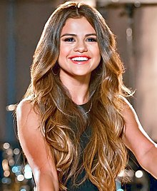

Artikel Sellena Gomez ?
Selena Gomez diberi peran berulang pada serial populer Disney Channel Hannah Montana pada tahun 2007, memerankan bintang pop Mikayla.Selama waktu ini, Selena Gomez memfilmkan episode pilot dua seri potensi Disney channel; pertama, berjudul Arwin!,spin-off dari seri Suite Life, sedangkan yang kedua adalah spin-off dari seri Lizzie McGuire.Dia kemudian mengikuti audisi untuk peran dalam serial Disney Wizards of Waverly Place, akhirnya memenangkan peran utama Alex Russo.Setelah menerima peran, Selena Gomez dan ibunya pindah ke Hollywood.; Demi Lovato dan keluarganya juga pindah ke Hollywood, berharap untuk meraih kesuksesan yang sama dengan Selena Gomez.Di Wizards of Waverly Place Selena Gomez memerankan seorang gadis remaja di keluarga penyihir yang memiliki sebuah restoran di New York.[36] Serial ini secara cepat menjadi hit di jaringan tersebut, mendorong Selena Gomez untuk meraih kesuksesan.Serial ini menerima berbagai nominasi dan penghargaan.Selena Gomez merekam lagu tema untuk serial ini, berjudul "Everything is Not What It Seems".Selena Gomez berpacaran sebentar dengan sesama bintang Disney Nick Jonas pada tahun 2008.Selena Gomez kemudian muncul di video musik untuk lagu "Burnin' Up", yang telah direkam dan dirilis Jonas Brothers,dan kemudian, dia juga muncul dalam sebuah episode dari serial realitas Jonas Brothers: Living the Dream. Ketika bekerja pada musim kedua Wizards of Waverly Place, Selena Gomez muncul di Disney Channel khusus Studio DC: Almost Live bersama berbagai bintang Disney lainnya.Dia menyumbangkan sebuah cover dari lagu "Cruella de Vil" untuk album kompilasi DisneyMania 6,[44] dan kemudian merekam lagu asli "Fly to Your Heart" untuk lagu latar dari film animasi Tinker Bell.Dia memiliki peran utama, sebagai calon penari, dalam film musikal Another Cinderella Story pada tahun yang sama.Film ini dirilis umum dan mendapat ulasan positif, dan memenangkan Writers Guild of America Award 2010 untuk kategori Children's script-long form or special.Selena Gomez merekam tiga lagu untuk lagu latar film itu, dan merilis salah satu dari lagu tersebut, "Tell Me Something I Don't Know", sebagai single promosi.Pada tahun berikutnya, Selena Gomez memiliki peran pendukung sebagai Helga dalam film animasi Horton Hears a Who.[49] Film ini sukses secara komersial, dan mendapat pendapatan kotor hampir $300 juta di seluruh dunia.